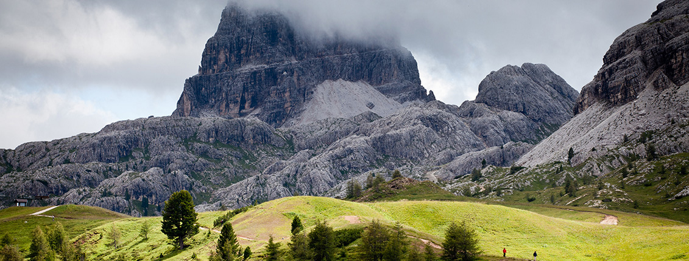

Our News

How to choose a flash for the camera
No flash will replace a full-fledged studio lighting (although, in the studio with multiple external flashes, you can use the same lighting circuits). But it allows to obtain the correct flash-exposed shots with a lack of light in a sequential shooting - especially indoors. And also greatly gains at light enough, but incorrect, creates sharp and unsightly shadows - for example, at bright summer day, or against backlight.
Read more
How to photograph a portrait
It happens that after a lot of time spent to apply the right makeup, selection of colors, clothes and suitable background the result is not as good as expected. And it seems the camera was set up as it should, and interesting background is selected, but the result is not what was expected. And sometimes, hastily we get brilliantly executed shots. Many people complain of being not photogenic, but it has no sense. Let's see how this science is comprehended by professional models.
Read more